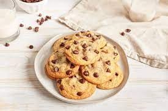

Chocolate Chip Cookies

This is going to be the chocolate chip recipe that knocks your socks off.
I can't take credit for this recipe as it came from All Recipes.com,
but I can say that they're pretty delicious. These cookies are gooey, melt-in-your-mouth goodness.
Ingredients
- 2 1/4 cups all purpose flour
- 1 teaspoon baking soda
- 1 teaspoon salt
- 1 (3.3 oz) package instant pudding mix
- 1 cup butter, softened
- 1 cup white sugar
- 3/4 cup brown sugar
- 2 eggs
- 2 teaspoons vanilla extract
- 2 cups semisweet chocolate chips
Steps
- Preheat the oven to 375 degrees F (190 degrees C). Stir together the flour, baking soda, salt and instant pudding powder; set aside.
- In a medium bowl, cream together the butter, white sugar and brown sugar until smooth. Blend in the eggs and vanilla. Gradually mix in the dry ingredients until just blended.
Stir in the chocolate chips by hand using a wooden spoon. Scoop cookies using an ice cream scoop or by heaping tablespoons.
Place cookies at least 2 inches apart onto ungreased cookie sheets.
- Bake for 8 to 10 minutes in the preheated oven, until lightly golden. Cool on baking sheets for a few minutes before removing to wire racks to cool completely.
Return to homepage